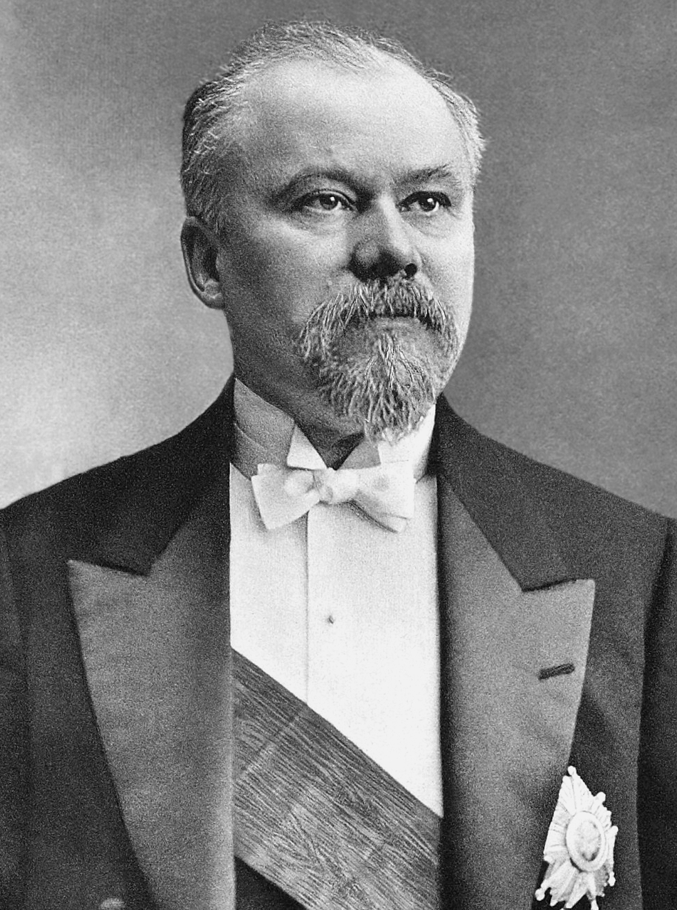

Закон всемирного тяготения
В 1682 году
Исаак Ньютон
 открыл закон всемирного тяготения, который в рамках классической механики описывает гравитационное притяжение.
Закон гласит, что гравитационное притяжения между двумя материальными точками массы $m_1$ и $m_2$, разделёнными расстоянием $r$, пропорциональна обеим массам и обратно пропорциональна квадрату расстояния:
открыл закон всемирного тяготения, который в рамках классической механики описывает гравитационное притяжение.
Закон гласит, что гравитационное притяжения между двумя материальными точками массы $m_1$ и $m_2$, разделёнными расстоянием $r$, пропорциональна обеим массам и обратно пропорциональна квадрату расстояния:
Здесь $G$ — гравитационная постоянная, равная примерно $6,67⋅10−11 м³/(кг·с²)$. Этот закон выполняется в приближении при малых по сравнению со скоростью света $v \ll c$ скоростей и слабого гравитационного взаимодействия (если для изучаемого объекта, расположенного на расстоянии $R$ от тела массой $M$, величина ${{GM}\over {c^2R}} \ll 1$). В общем случае гравитация описывается общей теорией относительности Эйнштейна.
Закон всемирного тяготения — одно из приложений закона обратных квадратов, встречающегося также и при изучении излучений (например, давление света) и являющегося прямым следствием квадратичного увеличения площади сферы при увеличении радиуса, что приводит к квадратичному же уменьшению вклада любой единичной площади в площадь всей сферы.
Гравитационное поле, так же как и поле силы тяжести, потенциально. Это значит, что работа силы притяжения не зависит от вида траектории, а только от начальной и конечной точек. Равносильно: можно ввести потенциальную энергию гравитационного притяжения пары тел, и эта энергия не будет изменяться после перемещения тел по замкнутому контуру. Потенциальность гравитационного поля влечёт за собой закон сохранения суммы кинетической и потенциальной энергии и при изучении движения тел в гравитационном поле часто существенно упрощает решение. В рамках ньютоновской механики гравитационное взаимодействие является дальнодействующим. Это означает, что, как бы массивное тело ни двигалось, в любой точке пространства гравитационный потенциал зависит только от положения тела в данный момент времени.
Большие космические объекты — планеты, звёзды и галактики — имеют огромную массу и, следовательно, создают значительные гравитационные поля.
Гравитация — слабейшее взаимодействие. Однако, поскольку оно действует на любых расстояниях и все массы положительны, это, тем не менее, очень важное воздействие во Вселенной. В частности, электромагнитное взаимодействие между телами в космических масштабах мало, поскольку полный электрический заряд этих тел равен нулю (вещество в целом электрически нейтрально).
Задача трех тел
Задача трёх тел в астрономии — одна из задач небесной механики, состоящая в определении относительного движения трёх тел (материальных точек), взаимодействующих по закону тяготения Ньютона (например, Солнца, Земли и Луны). В отличие от задачи двух тел, в общем случае задача не имеет решения в виде конечных аналитических выражений. Известны лишь отдельные точные решения для специальных начальных скоростей и координат объектов.
Общая задача трёх тел в небесной механике описывается системой обыкновенных дифференциальных уравнений второго порядка
$$ \left . \begin{array}{c} \ddot q_1= \gamma m_2{{q_2-q_1}\over{|q_2-q_1|^3}}+\gamma m_3{{q_3-q_1}\over{|q_3-q_1|^3}}\\ \ddot q_2= \gamma m_1{{q_1-q_2}\over{|q_1-q_2|^3}}+\gamma m_3{{q_3-q_2}\over{|q_3-q_2|^3}}\\ \ddot q_3= \gamma m_1{{q_1-q_3}\over{|q_1-q_3|^3}}+\gamma m_2{{q_2-q_3}\over{|q_2-q_3|^3}} \end{array} \right \} $$где $\gamma$ — гравитационная постоянная, $m_i$ — массы тел, $q_i$ — радиус-векторы, определяющие их положение, а точка означает производную по времени.
Движение трех тел в общем случае ациклично и непредсказуемо. Пуанкаре доказал, что данная задача общего решения не имеет, однако существует бесконечное множество частных. Первые три были найдены Эйлером еще в 1767 году.